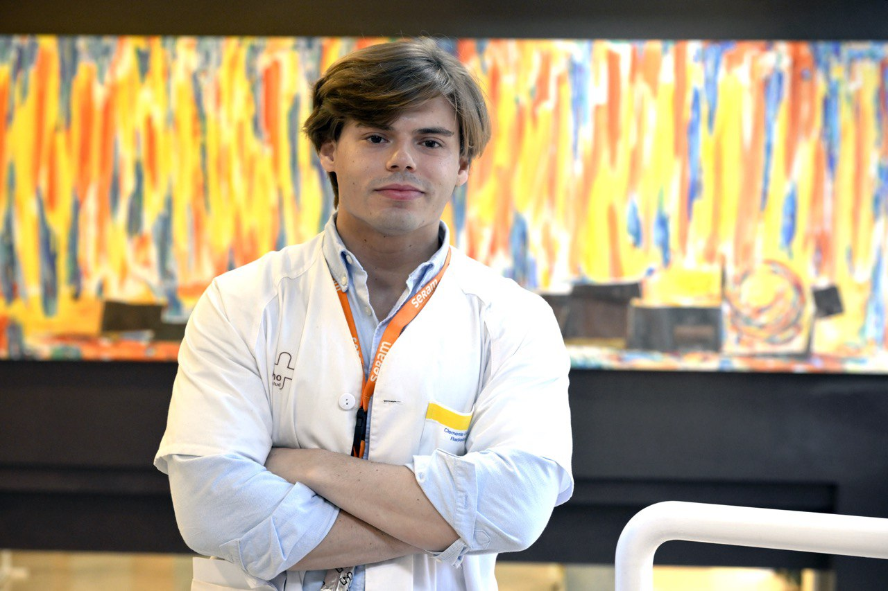

Quantitative neuroimaging · 2026
MD, MSc · Physician & researcher
Clemente
García-Hidalgo
Neuroimaging, machine learning & biostatistics.
I study what brain imaging can reveal—and what it takes to make medical AI evidence reliable.
Radiology resident · Hospital Morales Meseguer, Murcia
PhD candidate · University of Murcia / research at IDIBELL–Bellvitge
MSc in Bioinformatics · UNIR

Quantitative methods.
Reproducible research.
26Journal publications2023–2026
22Published in 2026Through 12 November
18First-author worksIncluding sole authorship
8Sole-author worksIndependent contributions
Unique journal publications, including articles, letters and perspectives; translated editions grouped. Sources & counting method ↗
Three connected research directions
Quantitative neuroimaging
Perfusion MRI, vascular and metabolic phenotypes, and exploratory radiogenomics in brain tumours. Connecting image measurements to biological questions.
The reliability of medical AI
Analytical leakage, model multiplicity, synthetic data, representation geometry and privacy. Examining how methodological choices shape scientific conclusions.
Software & medical education
Research tools, clinical software verification, and the evaluation of language models and AI-assisted learning in medicine.
Explore public software →Selected publications
All 26 publications →Radiomics & analytical validity · 2026
Lifting the radiomics performance ceiling: how preprocessing leakage amplifies model multiplicity
Synthetic data & privacy · 2026
SynPAR for Empirical Membership Inference Auditing of Synthetic Radiomic and Embedding Data
Medical AI & psychometrics · 2026
Construct Validity of Frontier Large Language Models on 4 Spanish Health Professions Specialty-Access Examinations (MIR, EIR, PIR, and FIR): Cross-Sectional Benchmarking and Psychometric Study
Recent highlights
- IDI highlights our ESNR Scientific Award 2026 for work on DSC perfusion biomarkers in adult brain tumours.
- New in JMIR Medical Education: construct validity of frontier language models across four Spanish health professions examinations.
- Winner of the IABiomed Treelogic challenge on visual de-identification of medical images. Explore DeID-Rx →
- Began serving as General Coordinator of Club Bibliográfico SERAM.
Research is a conversation
I welcome collaborations in quantitative neuroimaging, rigorous AI evaluation and reproducible research software.
clemente292@gmail.com